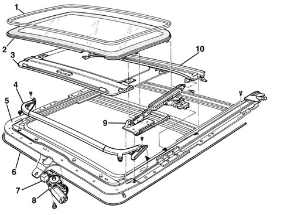

Introduction - SUN ROOF AND HOOD
- Path
- Descriptions > 70 FITTINGS > 7030 SUN ROOF AND HOOD > Introduction - SUN ROOF AND HOOD
- Kind
- system description
- Applies to
- all engines; all production periods
- Interactive page
- https://sloeber94.github.io/elrnDB-a156/en/#/3239240
Applies to: all engines; all production periods
GLOSSARY
Thermal tinted glass
Coloured or bronzed glass to limit the passage of infrared light and solar rays.
Drive cable
Flexible rack which, moved by the electric motor pinion, synchronously drives the pads to which the roof is anchored allowing movement.
VIEW OF ASSEMBLY
The diagram shows the entire subassembly

1, Seal 2, Transparent panel 3, Blind 4, Spoiler 5, Frame 6, Drive cable 7, Control unit 8, Motor 9, Pantograph 10, Drainage channel
DESCRIPTION
The sun-roof is electrically-operated with a cover in thermal tinted glass (*) to allow a reduction in the transmission of light and energy.
The rigid, sliding blind on the inside may be operated by hand.
The control switch is positioned next to the passenger compartment courtesy light and operates the electric motor by means of a special control unit.
The motor therefore operates the two drive cables (*) to which the pantograph pullies which move the panel are attached.